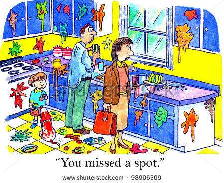

Explain that you are concerned with the condition of the home.
Explain that you are concerned with the condition of the home. Continue observing and engage in normal conversation to see if an opportunity presents itself to discuss your concerns.
Continue observing and engage in normal conversation to see if an opportunity presents itself to discuss your concerns.You set up a face to face meeting for an individual. They requested that you come to their home, so you do so. You notice while there that the home is in poor condition. There are dishes all over the home with spoiled food, the carpets are filthy, there is laundry everywhere, and the home smells of urine. The individual seems oblivious to the conditions and offers you a glass of water.
